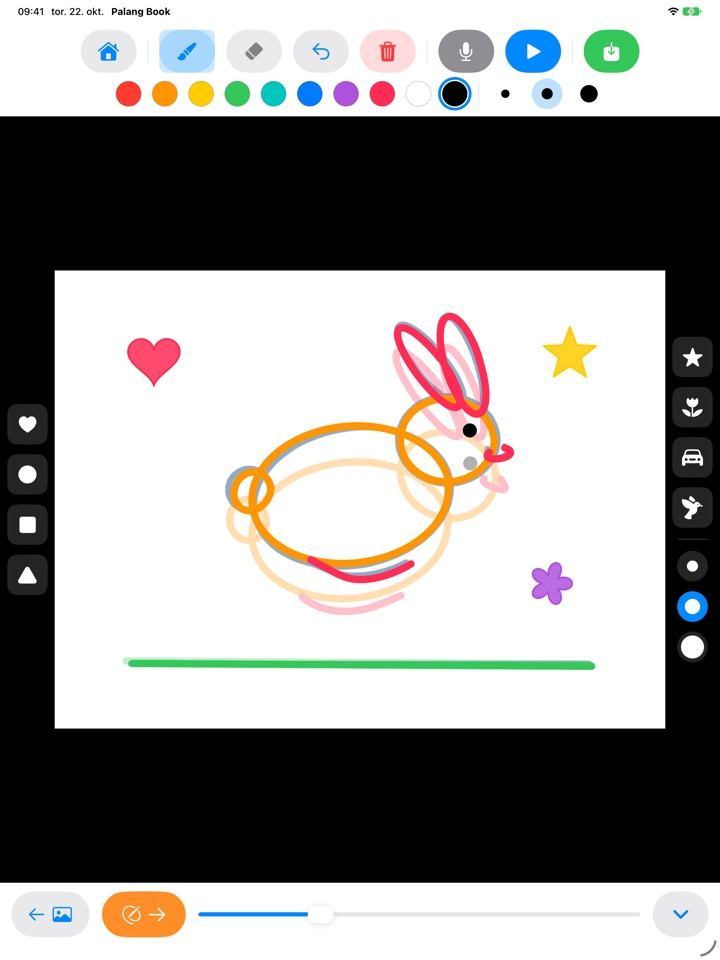
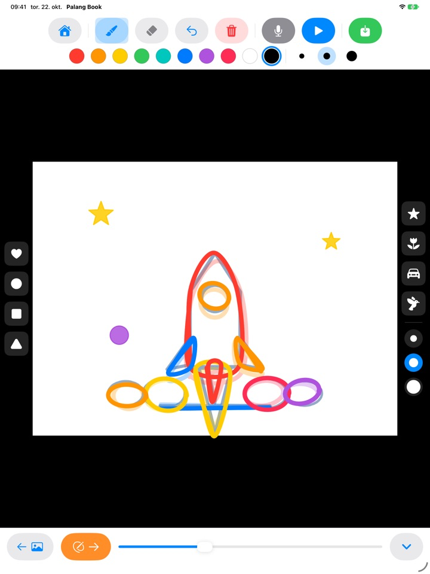
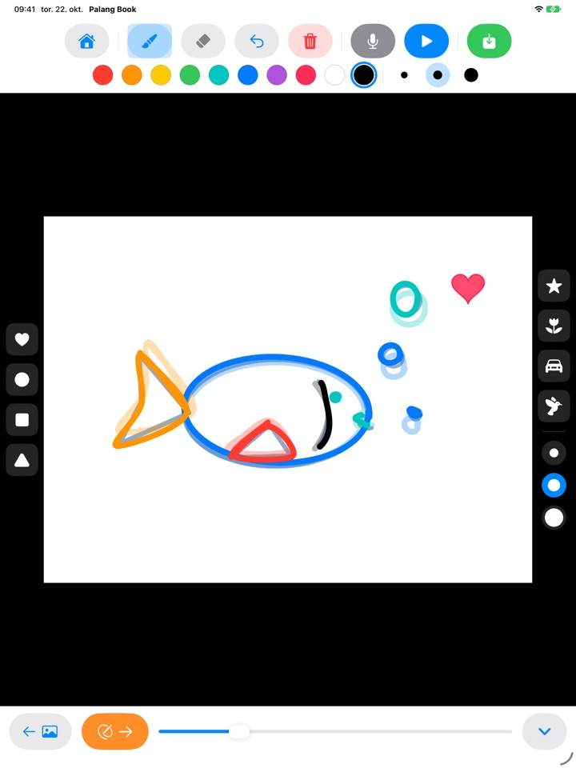
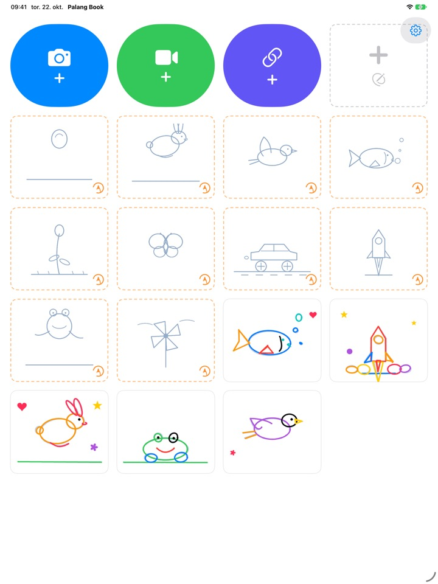

Tegn etter strekene.
Se dem bevege seg.
Barnet tegner etter en lys skisse, én side om gangen. Trykk på spill av, så forsvinner skissen og bare barnets egne streker beveger seg. Alle knappene er bilder, så barnet klarer seg selv før det kan lese.
For iPad. Tre tegn etter-sett er gratis.

Tegn noen sider
Tegn noe, og trykk på den oransje pilen for å gå til neste side. Forrige side skinner svakt gjennom. Etter to eller tre sider trykker du på den blå spill av-knappen.
Synd at en fin tegning bare skal stå stille, ikke sant?
Animasjon betyr å tegne nesten den samme tegningen om og om igjen med små endringer, og alene vet barn ikke hvor de skal begynne. Palang Book legger ut en lys skisse der bevegelsen allerede ligger inne, så barnet trenger bare å følge streken. I det øyeblikket barnet trykker på spill av, beveger tegningen seg.
Følg streken, så får du en animasjon
En sprettende ball, en hoppende kanin, en flygende fugl, en svømmende fisk, en blomst som springer ut, en sommerfugl, en racerbil, en rakett, en frosk og en vindmølle. Hvert sett har rundt 20 sider med skisser.
Forrige side skinner svakt gjennom, så neste side blir lett å tegne, og ved avspilling forsvinner skissen, så bare barnets tegning beveger seg.

Stempler og ti farger
Trykk ut hjerter, sirkler, firkanter, trekanter, stjerner, blomster, biler og fugler. Stempler og pensler finnes i tre størrelser, og det er ti farger å velge mellom.
Med viskelær og angre er feil lette å rette. Tegn med fingeren eller Apple Pencil.

Oppå egne videoer eller på blankt papir
Hent inn en video du har tatt opp selv eller en fra Bilder, og tegn oppå. Skjul bakgrunnen, så spilles bare scenene dere har tegnet, av etter hverandre på hvitt papir. Det finnes også en tom flipbook helt uten skisser.
Trykk på mikrofonen for å ta opp barnets stemme samtidig, og lagre det ferdige verket som video i Bilder for å dele det med familien.

Tre steg, så er dere i gang
- 1
Trykk på et skissekort
Kortene med oransje stiplet kant på startskjermen er tegn etter-sett.
- 2
Tegn og bla videre
Den oransje pilen tar deg til neste side.
- 3
Trykk på spill av
Trykk på den blå spill av-knappen, så beveger tegningen seg.
Hva knappene gjør
- Oransje stiplet kort
- Start et tegn etter-sett
- Grått stiplet kort
- Tom flipbook
- Blått kamera
- Tegn oppå en video du tar opp
- Grønn video
- Hent inn en video fra Bilder
- Indigo lenke
- Lim inn en lenke til en videofil
- Oransje pil
- Neste side
- Blå spill av
- Spill av animasjonen, trykk igjen for å stoppe
- Buet pil
- Angre siste strek
- Rød søppelkasse
- Tøm hele siden (angre henter den tilbake)
- Mikrofon
- Ta opp stemme mens animasjonen går i løkke
- Videoikon
- Skjul videobakgrunnen (rosa med strek betyr bare tegninger)
- Grønn lagring
- Lagre som video i Bilder
Vil du slette et verk, trykker og holder du på kortet på startskjermen. Tegningene, opptaket og den innhentede videoen slettes samtidig.
Mye å prøve gratis. Livstidstilgang hvis dere blir glad i det.
Gratis
- 3 tegn etter-sett (ball, kanin, blomst)
- Lagre 3 verk
- Hent inn 1 video
- Tomme flipbooker på opptil 10 sider
- Stemmeopptak på opptil 15 sekunder
- Stempler, farger, pensler og lagring i Bilder
Livstidstilgang
- Alle tegn etter-sett, også kommende
- Ingen grenser for verk, sider, videoer eller opptakstid
- Ikke noe Palang Book-kort på slutten av lagrede videoer
Et engangskjøp, ikke et abonnement. Med Familiedeling fungerer det på alle iPadene i familien.
Videoer som lagres gratis, slutter med et kort Palang Book-kort. Brukte du Palang Book før Livstidstilgang fantes, er alt allerede låst opp for deg.
Spørsmål
Hvordan fungerer skissene?
De lyse himmelblå strekene er skissen. Barnet tegner oppå dem, og når du trykker på spill av, forsvinner skissen og bare barnets streker beveger seg. Gjør ferdig rundt 20 sider, så er animasjonen klar.
Jeg vil spille av og lagre bare tegningen, uten videoen.
I et videoprosjekt trykker du på videoikonet i verktøylinjen øverst, så det blir rosa med strek over. Da viser både avspilling og lagring bare tegningen på hvit bakgrunn. Bare scenene dere har tegnet, spilles av, så noen få tegninger oppå et langt klipp blir en kort animasjon.
Hvor havner den ferdige videoen?
Trykk på den grønne lagreknappen helt til høyre i verktøylinjen, så lagres en mp4-video i Bilder. Gi tilgang til Bilder første gang du lagrer.
Hvordan legger jeg til stemme?
Trykk på mikrofonknappen for å ta opp mens animasjonen går i løkke, og trykk på stopp for å avslutte. Et nytt opptak erstatter det gamle. Stemmen kommer med når du lagrer videoen.
En videolenke åpnes ikke.
Sjekk internettforbindelsen, og pass på at adressen peker rett til en videofil (en som slutter på .mp4 eller lignende). Lenker til sider på videodelingstjenester kan ikke åpnes. Bruk gjerne videoer du har laget selv, eller som er frie å bruke.
Håndflaten lager stadig merker.
Den buede pilen fjerner siste strek, og den røde søppelkassen tømmer hele siden (angre henter den tilbake). Skjer det ofte, send oss en e-post, så hjelper vi deg.
Hvorfor kommer det et regnestykke før kjøpsskjermen?
Så barn ikke kommer til kjøpsskjermen på egen hånd. Når et barn trykker på noe som er låst, vises en stor hengelås og beskjed om å vise det til en voksen, og kjøpsskjermen åpnes først når en voksen har svart på et gangestykke.
Hvordan gjenoppretter jeg kjøpet?
Trykk på tannhjulet øverst til høyre på startskjermen, velg Livstidstilgang, svar på voksenspørsmålet og trykk på Gjenopprett kjøp. Du må være logget inn med den samme Apple-kontoen som du kjøpte med.
Hvordan sender jeg tilbakemelding fra appen?
Trykk på tannhjulet på startskjermen og velg Send tilbakemelding. Du kan legge ved et skjermbilde og legge igjen navn og e-post hvis du ønsker svar. Vi ber om at en forelder sender tilbakemeldingen.
Samler dere inn opplysninger om barnet mitt?
Nei. Palang Book samler ikke inn noen personopplysninger, og tegninger og opptak blir værende på iPaden din. Se personvernerklæringen for detaljer.
Spørsmål eller problemer? Send en e-post til mizzking75@gmail.com. Vi svarer vanligvis innen 2–3 dager.